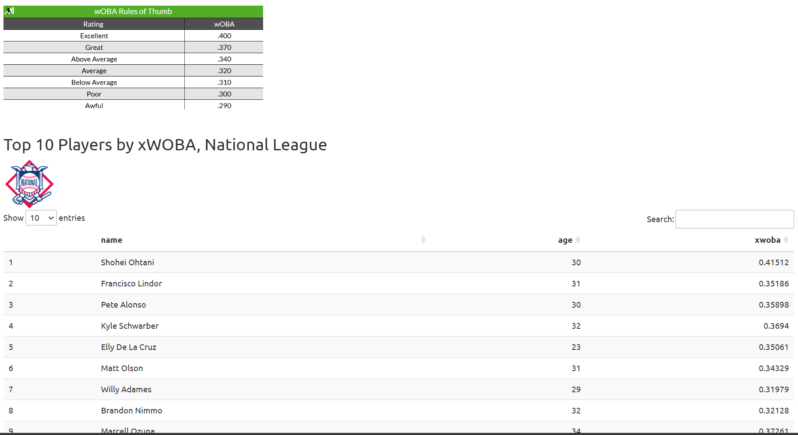
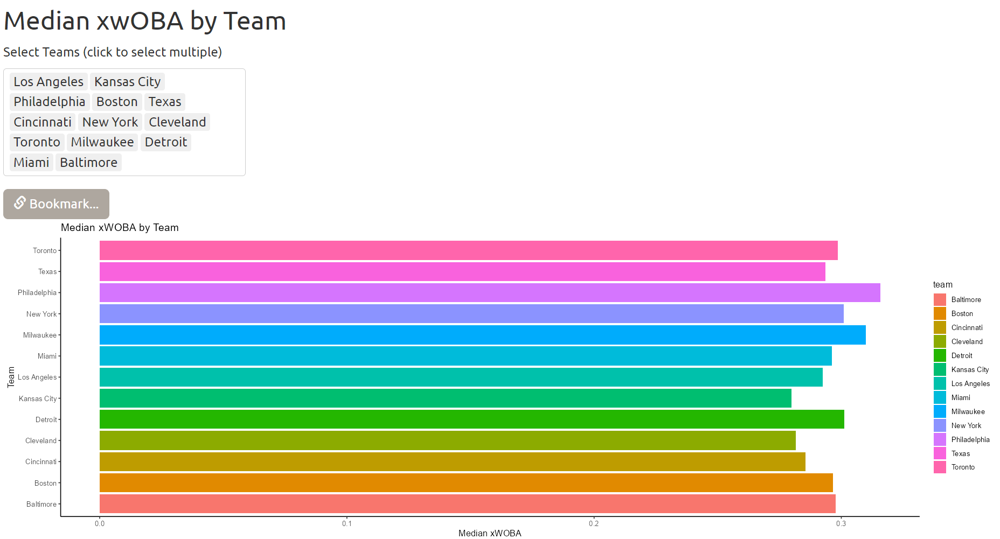
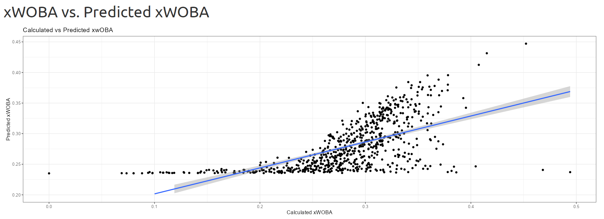
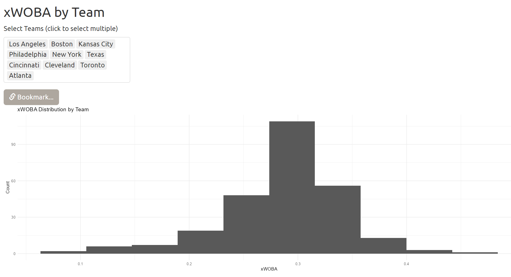
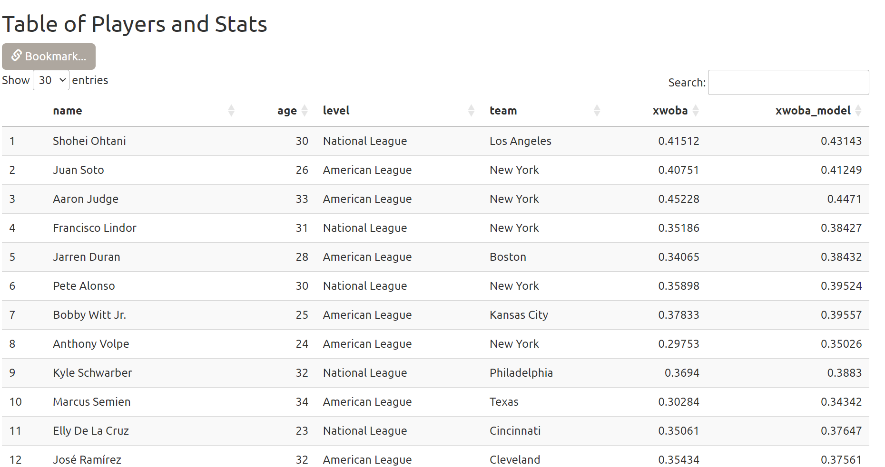

# Top 10 national players for tab 1
output$top10_nl <- DT::renderDT({
working_data |>
filter(level == "National League") |>
# Not sorting by xwoba because of outliers
select(name, age, xwoba) |>
head(10)
})
# Top 10 american players for tab 1
output$top10_al <- DT::renderDT({
working_data |>
filter(level == "American League") |>
# Not sorting by xwoba because of outliers
select(name, age, xwoba) |>
head(10)
})6 Visualize
6.1 Visualization
6.1.1 Tab 1
The first tab serves as an introduction to the data solution, and gives an overview of the players in each league. At the top, there is a table of xWOBA ratings to give a sense of how the value should be interpreted. It is also the same table from Figure 1.1. The players are then divided by league, to list out the top 10 players ranked by xWOBA, with their age included as well. This would be important to the stakeholders as it allows them to assess how well the top players perform, to give context, and to compare these players to the players that they may be interested in.

Figure 5.1, tab 1
The implementation method is borrowed from “Data Table” (n.d.) as a part of the shiny gallery website. As noted here, xWOBA is not sorted because there are outliers with xWOBA > 0.5, way more competitive than the top players, due to their plate appearance being very low, meaning that they only appeared on the field once or twice.
6.1.2 Tab 2
The second tab sorts median xWOBA by team. Multiple teams can be selected and even bookmarked for future use, since there are many listed teams. The chart comes with labels that help to identify each team, so that stakeholders can effectively see which team performs the best in terms of xWOBA. This helps with decision making, and will determine how well a team will fare against another in a broad sense.

Figure 5.2, tab 2
# Reactive select teams for tab 2
teams_2 <- reactive({
req(input$teams)
working_data |>
filter(team %in% input$teams)
})
# Bar plot of median xWOBA for tab 2
output$median_xwoba <- renderPlot({
median_calc <- teams_2() |>
group_by(team) |>
# Calculates median for each team
summarize(median_xwoba = median(xwoba))
ggplot(median_calc, aes(x = team, y = median_xwoba, fill = team)) +
geom_col() + coord_flip() + theme_classic() +
labs(x = "Team", y = "Median xWOBA", title = "Median xWOBA by Team")
})The median is calculated instead of the mean since it is a more robust statistic. As well, the chart displays the horizontal bar plot to avoid clutter.
The bookmarking function is discovered in “Bookmarking” (n.d.), which is displayed on the shiny gallery website.
6.1.3 Tab 3
This tab compares calculated xWOBA to the predicted xWOBA, which was constructed via the linear model. The model fit and appropriateness will be discussed on the upcoming Model chapter.

Figure 5.3, tab 3
A linear prediction with the confidence interval was also included as to gauge how similar the predicted and calculated values are for xWOBA. For stakeholders, the predicted xWOBA can be useful as a model to predict xWOBA for varying types of players. It is also a part of the technical requirement of the data solution.
# Scatter plot of calculated xWOBA vs model on tab 3
output$scatter_compare <- renderPlot({
ggplot(working_data, aes(x = xwoba, y = xwoba_model)) +
geom_point() +
geom_smooth(method = "lm") + theme_bw() +
labs(
x = "Calculated xWOBA",
y = "Predicted xWOBA",
title = "Calculated vs Predicted xwOBA"
)
})The implementation of tab 3 was straightforward.
6.1.4 Tab 4
The fourth tab is similar to the second tab - this tab focuses on building a histogram that aggregates data to form a distribution of xWOBA for individual teams, as well as for multiple teams at once. It also comes with a bookmark function that stores the input if needed. This is relevant for stakeholders because they can access xWOBA for every team, meaning that they will be able to effectively determine the skill distribution of all team members, as well as the general skill distribution for every team. This allows them to identify weak points and strengths, with the potential to allocate resources to train players with the smallest xWOBA and to reinforce the stronger players as well.

Figure 5.4, tab 4
# Reactive select teams for tab 4
teams_4 <- reactive({
req(input$teams)
working_data |>
filter(team %in% input$teams)
})
# histogram of xwOBA in teams for tab 4
output$xwoba_hist <- renderPlot({
ggplot(teams_4(), aes(x = xwoba)) +
geom_histogram(bins = 10) +
labs(x = "xWOBA", y = "Count", title = "xWOBA Distribution by Team") +
theme_minimal()
})The implementation of tab 4 also uses the bookmark function, and was similar overall to tab 2.
6.1.5 Tab 5
The last tab is simply a table with all players, complete with the search function and bookmarking. It also offers options for interactivity, and one can change the option of how many entries to display at once, as well as a built in sorting function. For stakeholders, this tab serves to isolate individual players, look at their information, and make decisions as to how to approach problems that they may have, such as how well a player performs, how competitive they would be against others, and so on. This is especially useful for searching up players that are competing against each other in an actual game.

Figure 5.5, tab 5
# Table of all players on tab 5
output$search_table <- DT::renderDT(
DT::datatable(
# Selects only a few columns to be more readable
working_data |>
select(name:team, xwoba, xwoba_model),
# Interactivity, number of players displayed
options = list(
lengthMenu = list(c(5, 15, 30, -1), c('5', '15', '30', 'All')),
pageLength = 30
)
)
)The code is almost directly taken from “Data Table” (n.d.).
6.2 References
“Bookmarking.” n.d. https://shiny.posit.co/r/gallery/advanced-shiny/bookmarking-url/.
“Data Table.” n.d. https://shiny.posit.co/r/gallery/widgets/datatables-options/.